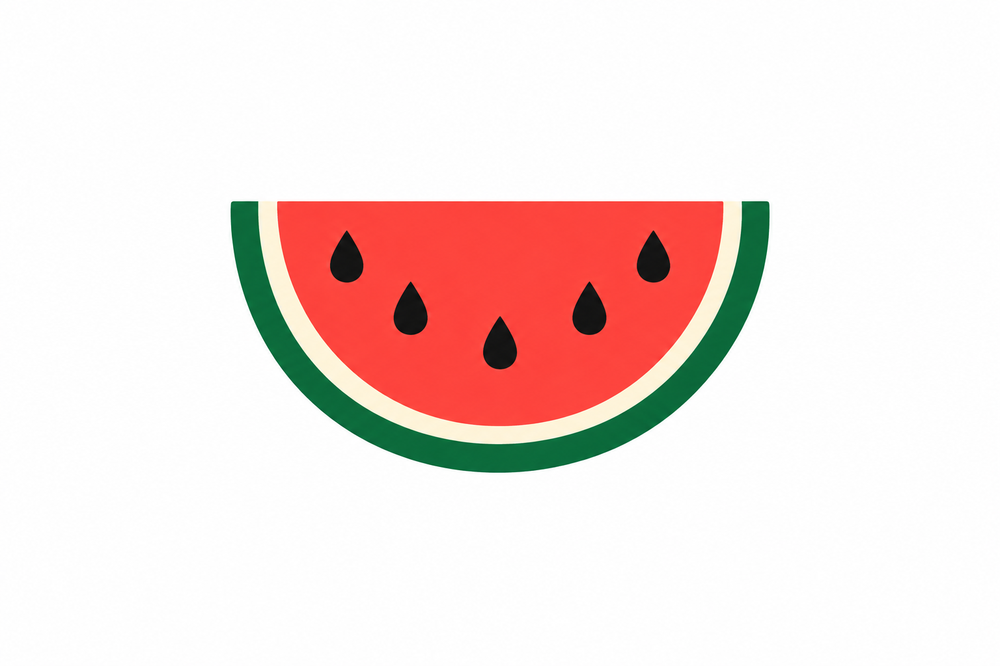

Проценты показывают сходство с образцом. Самостоятельные пробы учитываются отдельно.
Если выключить, можно писать и пальцем. Изменение действует для всех букв.
Рисунки хранятся на этом устройстве. Файл копии позволяет перенести их или восстановить позже.